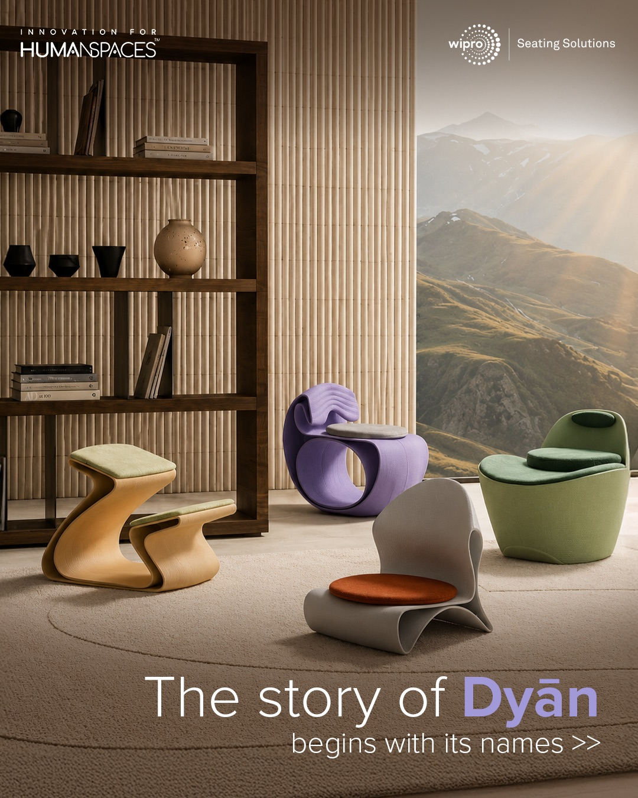
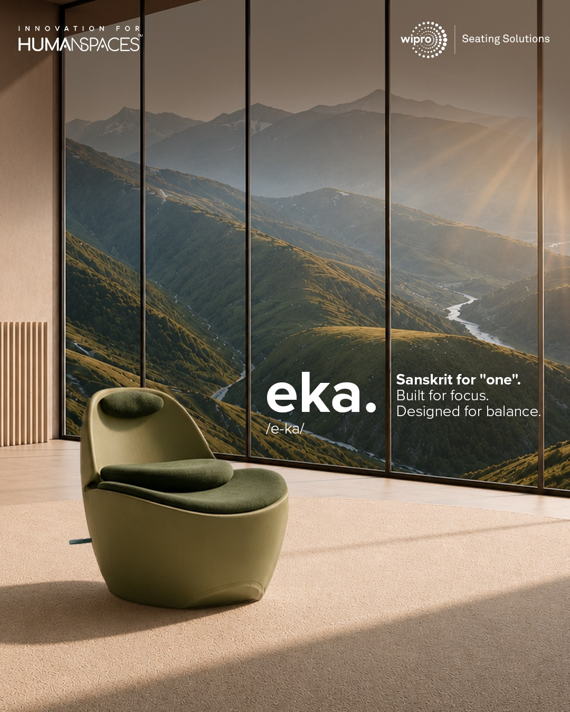
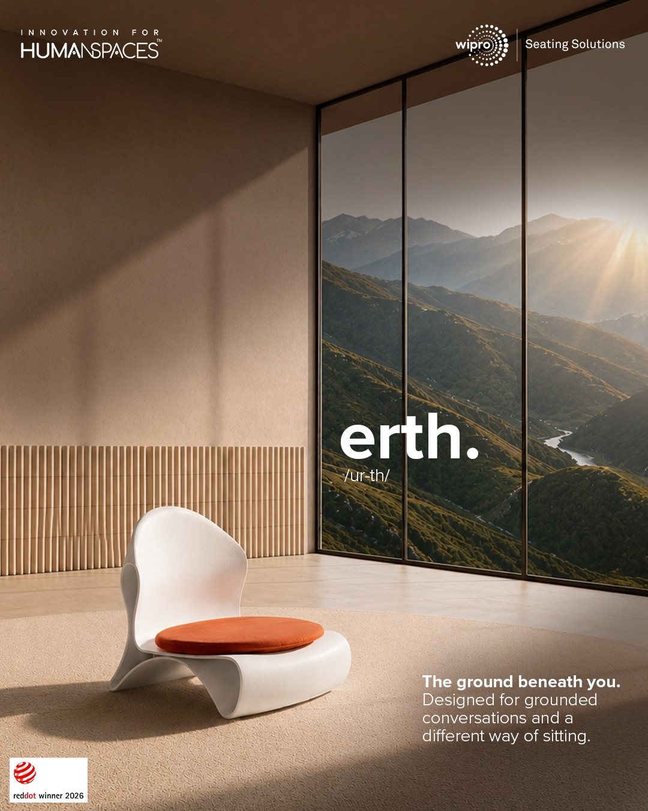
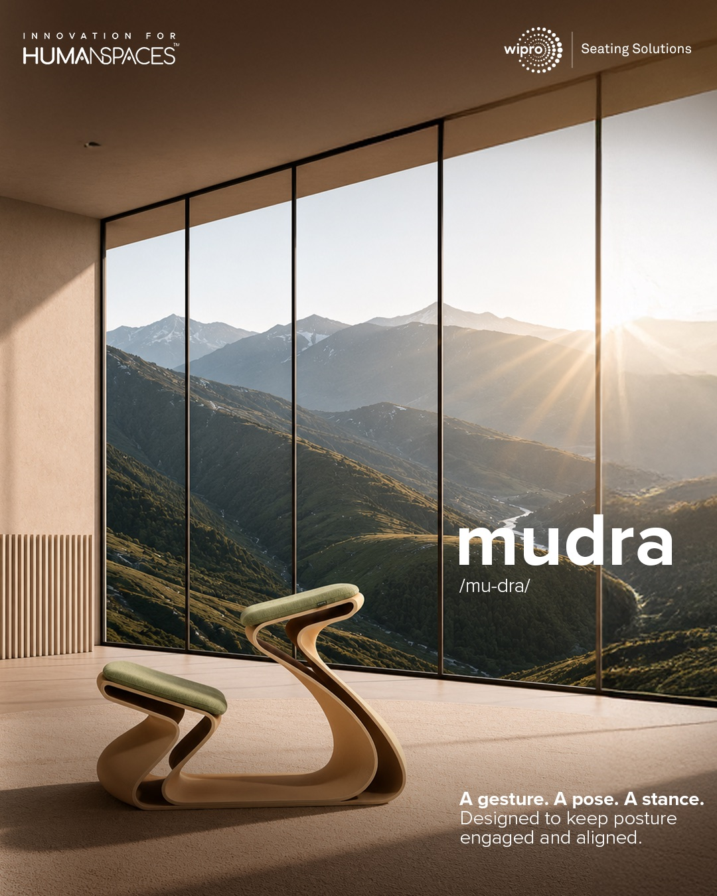
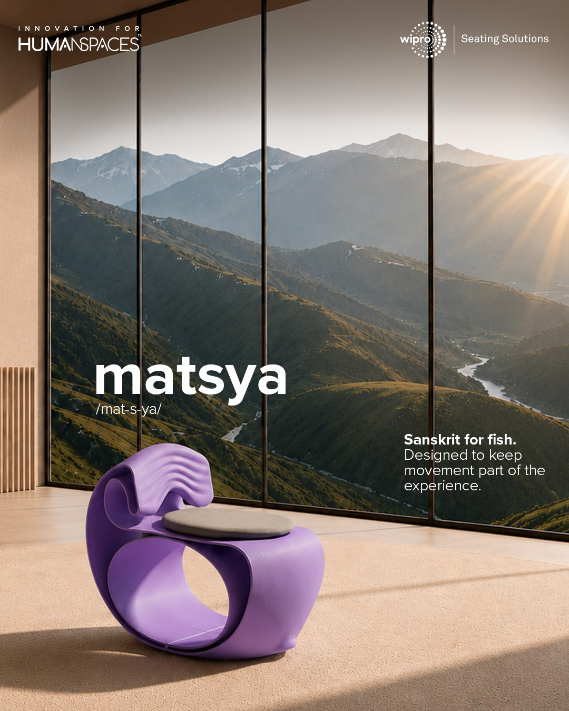
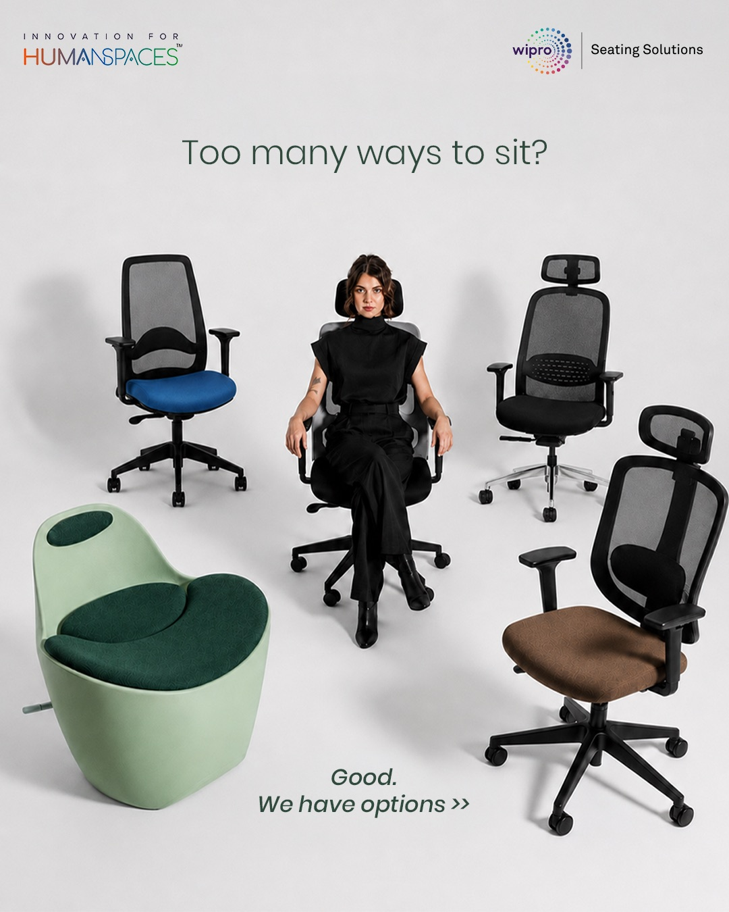
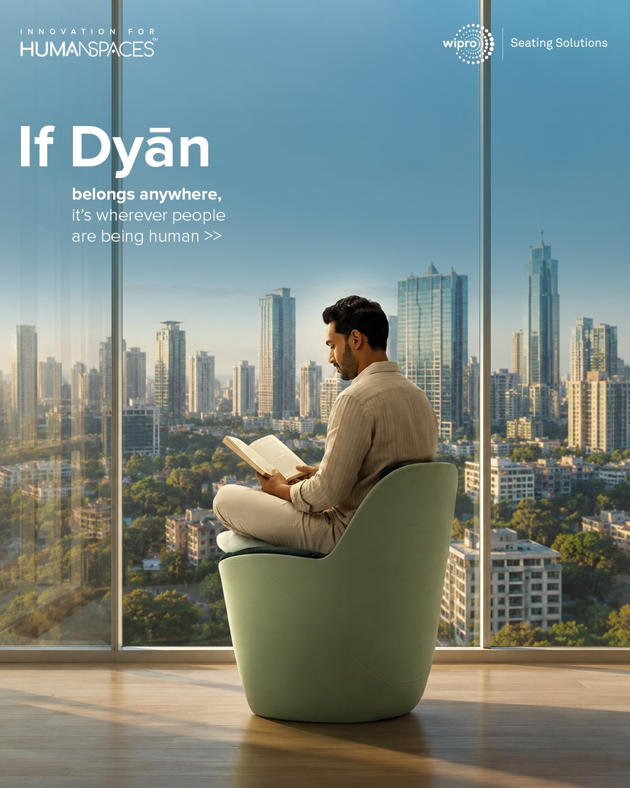
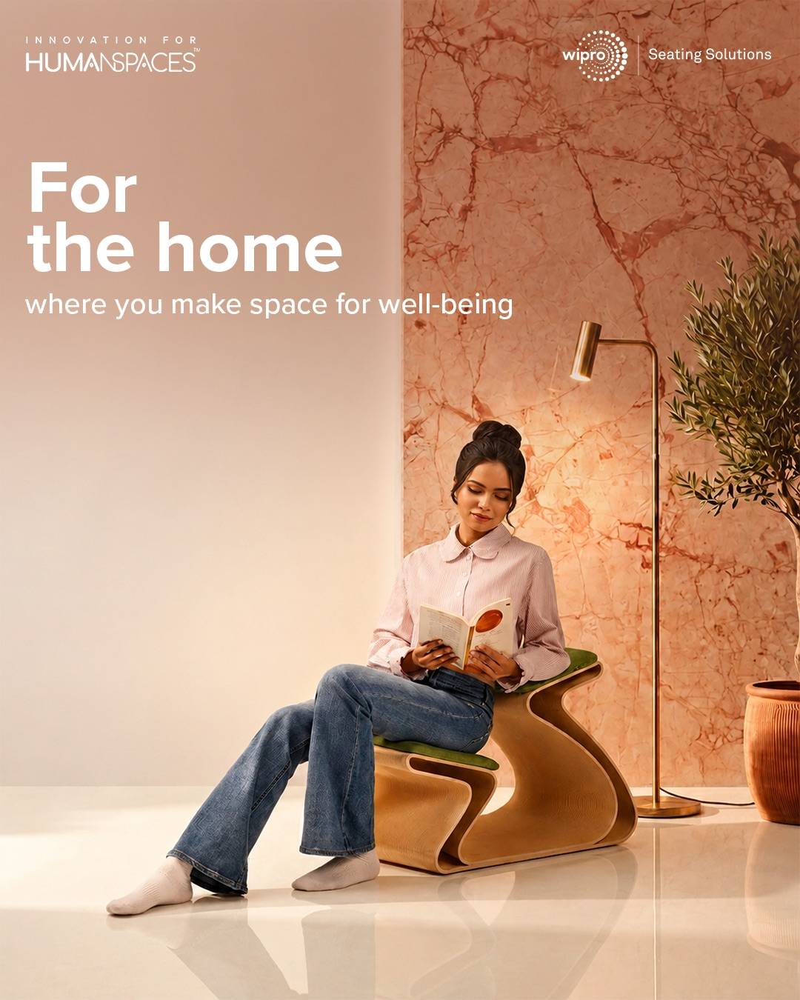
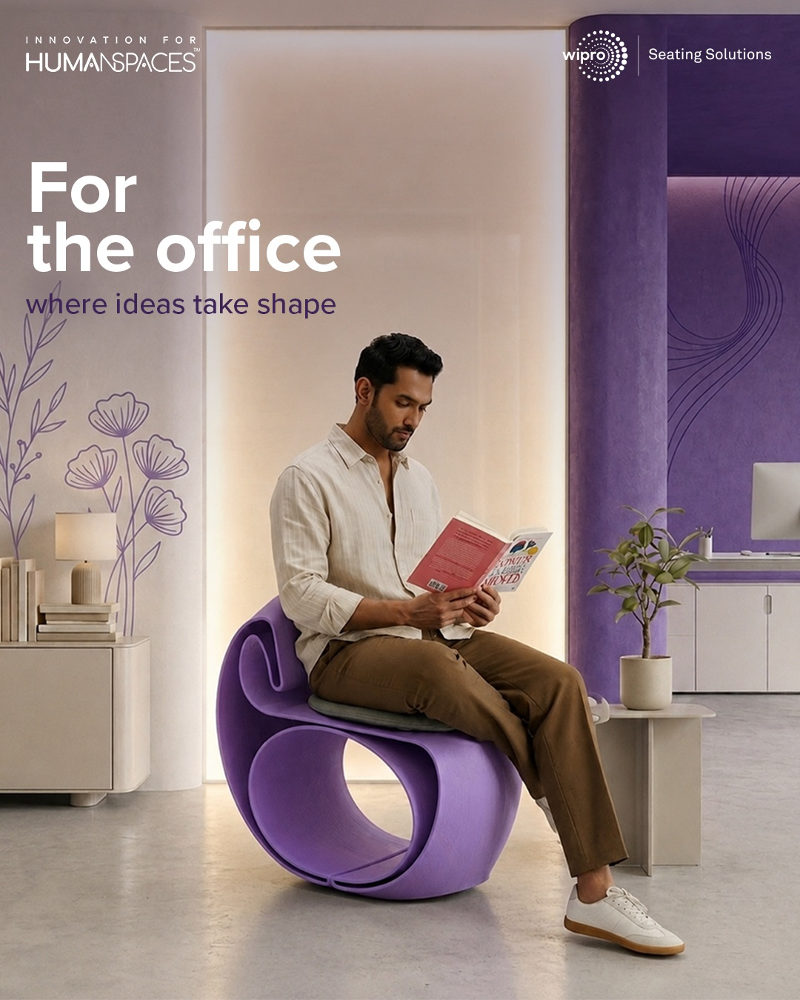

Wipro Seating Solutions
The newly launched Dyān collection of sculptural, meditation-inspired seating designed for focus, balance, and well-being.
The collection bridges traditional Indian design philosophy with contemporary ergonomics. Developed over an eighteen-month collaboration, Dyān transforms workspaces into mindful habitats for focused contribution and sensory refuge.


Designing a Sense of Calm
My work for Wipro Seating Solutions spans multiple collections and communication pieces, with the launch of the Dyān Collection being one of the key projects I worked on.
Rooted in the idea of aligning body and mind, Dyān is designed around human-centricity, refined aesthetics and intelligent ergonomics. Taking inspiration from this philosophy, I wanted the visual communication surrounding the collection to evoke the same feeling as the furniture itself, calm, balanced and intentional.
Rather than creating overly busy compositions, I conceptualized the designs around a sense of visual stillness. Soft environments, restrained layouts, thoughtful use of space and subtle lighting allowed the chairs and their sculptural forms to become the focal point. The intention was to create imagery that almost feels like a pause, communicating comfort and mindfulness before the product is even experienced physically.







Every element was considered to reinforce the larger philosophy behind Dyān: furniture that doesn't simply occupy a space, but contributes to how that space feels.
Beyond Dyān, I have also created designs for other Wipro Seating Solutions collections, adapting the visual language to different products and communication requirements while maintaining the brand's emphasis on thoughtful, human-centred design.